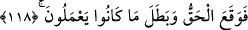
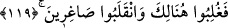
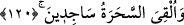

117. Biz de Musa’ya, “Asânı at!” diye vahyettik. Bir de baktılar ki, bu onların
uydurduklarını yakalayıp yutuyor.
Biz de Mûsâ’ya: “Asânı at” diye vahyettik.” Mûsâ (a.s.) asâsını attı ve yılan
oluverdi. “Bir de baktılar ki o, onların uydurduklarını” hızla “yakalayıp yutuyor.”
Rivayete göre Mûsâ (a.s.) asâsını atınca hemen o, büyük bir yılan oluverdi.
Büyücülerin iplerini ve asâlarını bütünüyle yuttu. Sonra orada hazır bulunanlara
yöneldi. Hepsi korkup kaçtılar. İzdihamdan dolayı sayısını ancak Allah Teâlâ’nın
bilebileceği büyük bir topluluk helâk oldu.
Sonra Mûsâ (a.s.) onu geri aldı, o da önceden olduğu gibi tekrar asâ oluverdi. Allah
Teâlâ kahredici kuvvetiyle büyücülerin ortaya çıkardığı koskocaman cisimleri yok etti
veya onları incecik parçalara ayırdı. Sihirbazlar: “Eğer Mûsâ’nın yaptığı sihir olsaydı,
iplerimizi ve değneklerimizi yutamaz, onlar ortada kalırdı.” dediler.
118. Böylece gerçek ortaya çıktı ve onların yapmakta oldukları yok olup gitti.
“Gerçek ortaya çıktı” Yani Mûsâ (a.s.)’ın: “Ben âlemlerin Rabbi tarafından
gönderilmiş bir peygamberim.” sözündeki doğruluğu ortaya çıkmış ve sâbit olmuş oldu.
Çünkü Allah Teâlâ, Mûsâ (a.s.)’ın elinde açık bir mucize izhar ederek onu doğruladı.
“ve onların bütün yaptıkları bâtıl oldu.” Büyücülerin yapageldikleri sihrin de bâtıl ve
asılsız olduğu anlaşıldı.
119. İşte Firavun ve kavmi, orada yenildi ve küçük düşerek geri döndüler.
“Orada” o meclisde Firavun ve ona tâbî olanlar, “yenildiler, küçük düştüler.” Zelil
ve sus pus oldular.
120. Sihirbazlar ise secdeye kapandılar.
“Ve sihirbazlar secdeye kapandılar.” yani, büyücüler sanki birileri onları yere atmış
gibi şiddetli bir şekilde yüzüstü yere kapanarak secde ettiler. Nasıl kapanmasınlar ki?
Gördükleri hakîkat onları şaşkına çevirip böyle yapmaya mecbur etti.
Ayette temsîli istiâre vardır. Çünkü, Mûsâ (a.s.)’ın son derece açık ve büyük